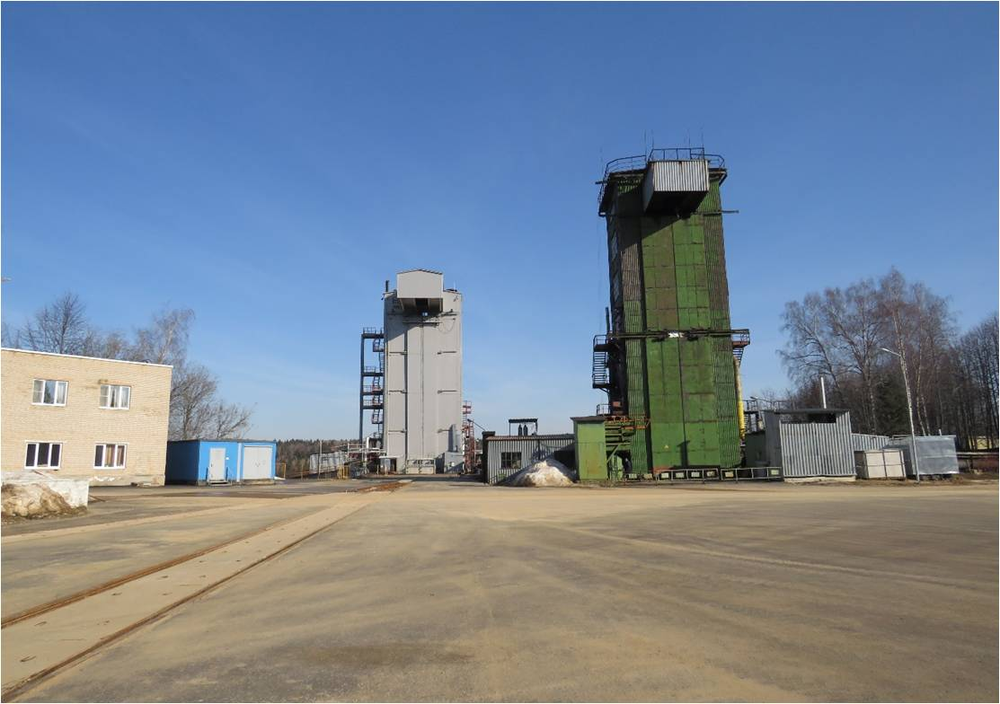
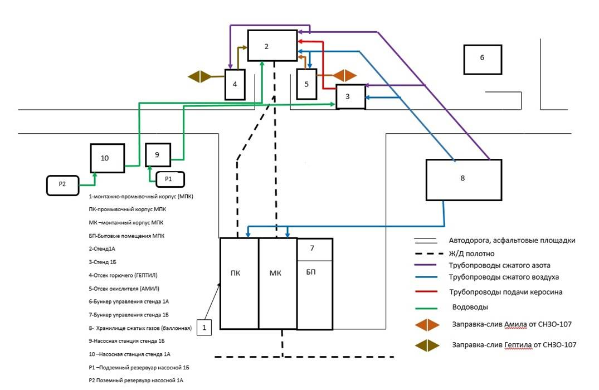
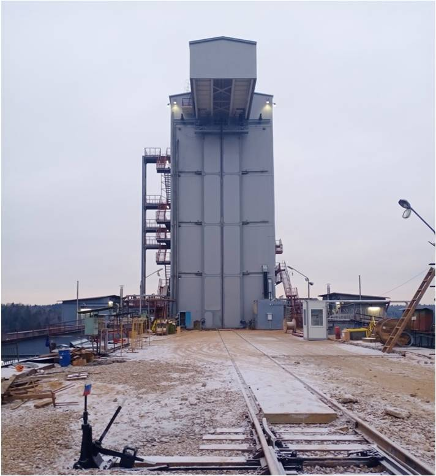
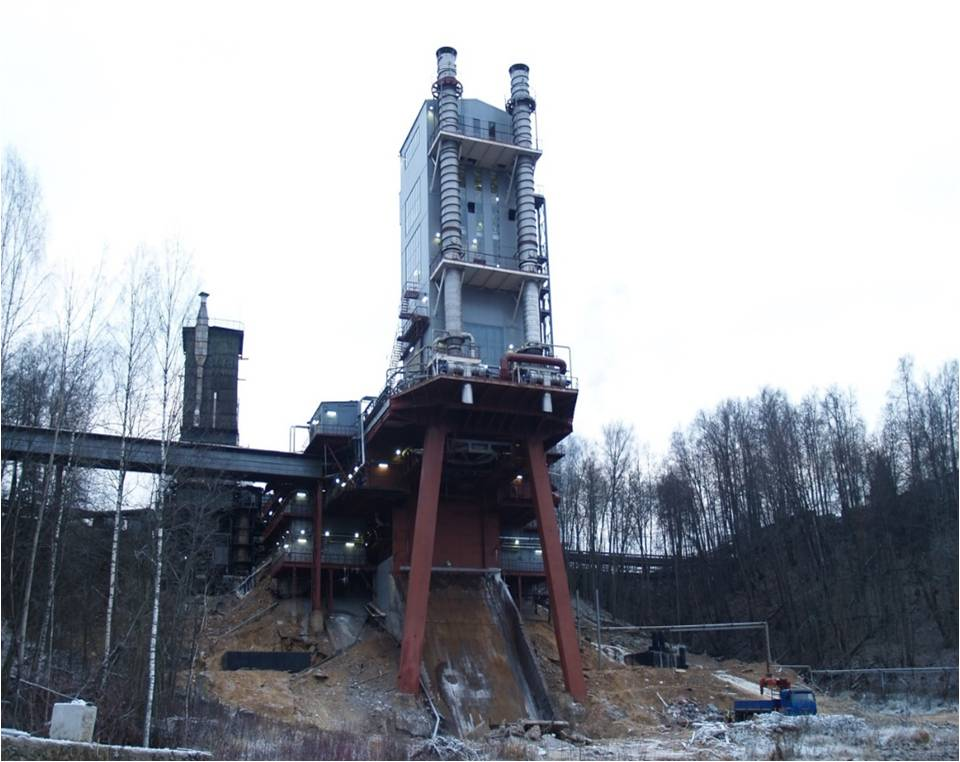

Стенд ИС-101
Испытательная станция ИС-101 введена в эксплуатацию 18 декабря 1949 года как автономный испытательный стенд. В настоящий момент входит в состав комплекса стендовых испытаний КСИ-101.
Структурная схема КСИ-101\ИС-01:
- входной контроль и приемка ДУ.
- подготовка стендового оборудования и систем.
- совместная проверка ДУ со стендовыми системами
- огневые стендовые испытания.
- анализ и оценка результатов испытаний и выпуск технического отчета по ОСИ
Перспективы КСИ-101\ИС-01:
На стенде А1:
 - отработка ступени ракеты носителя «Изделие 007», генеральный заказчик – МО РФ(Министерство обороны).